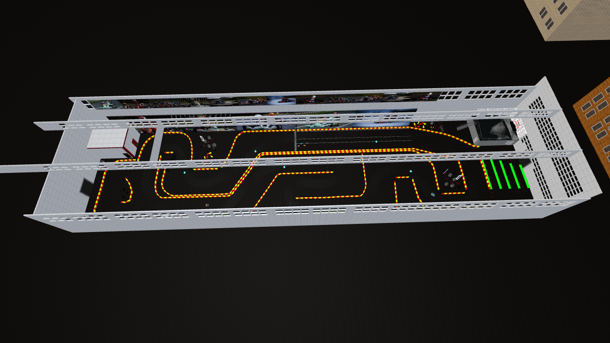
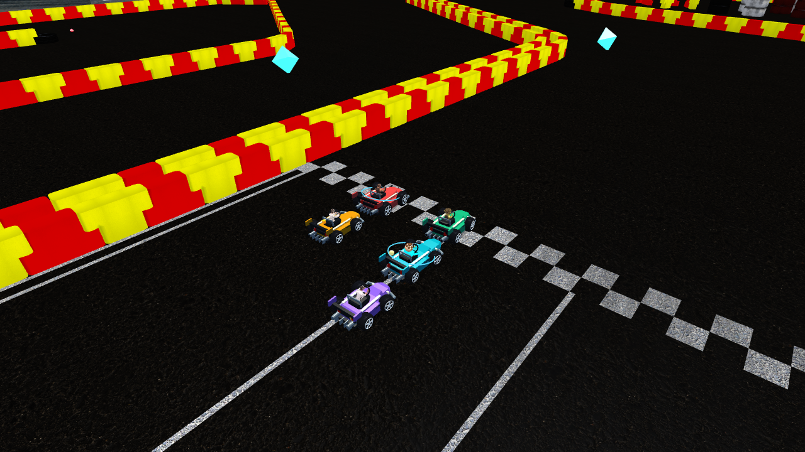
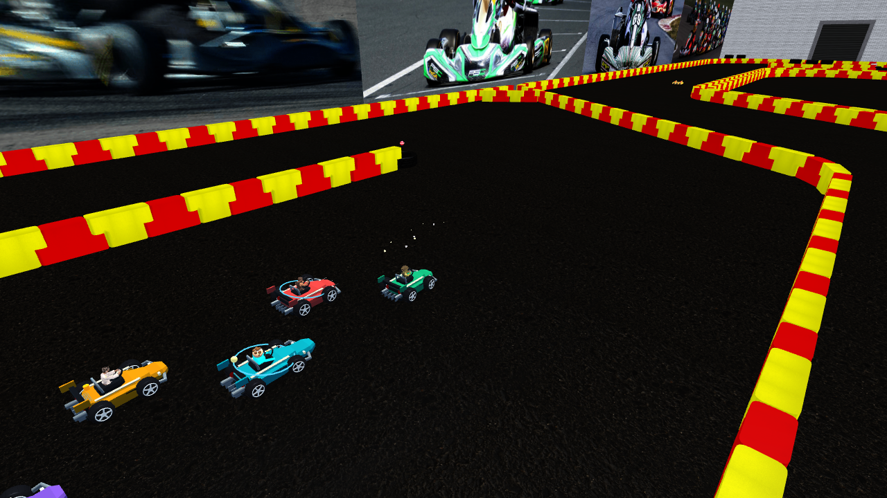
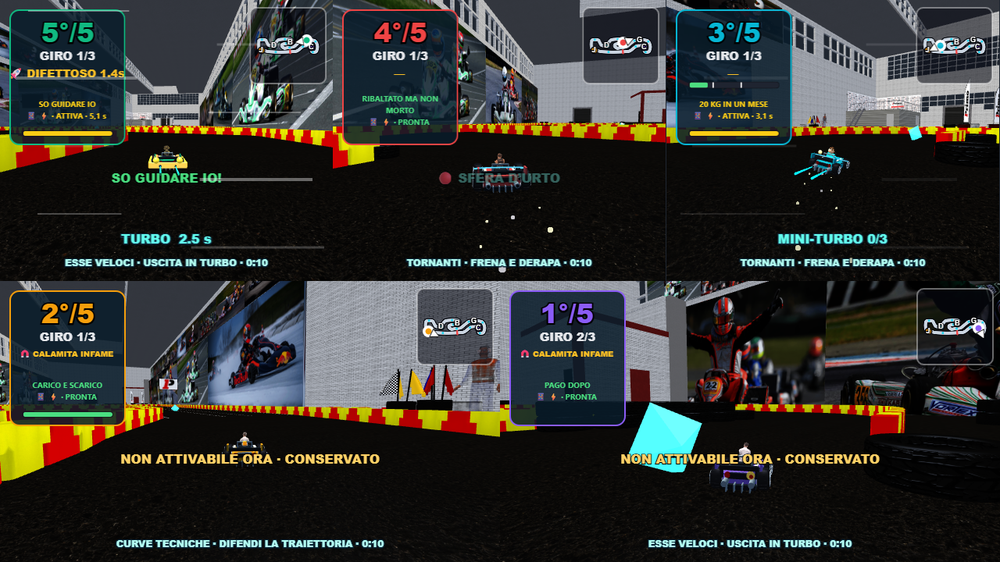

RIBALTATI · QUARTO CIRCUITOPrimo Karting
Staccate, tornanti e sorpassi ravvicinati nel circuito originale. Tre giri, derapate e mini-turbo, con tutti i Lucky Block e i poteri di Ribaltati 1.4.
1.186 unità / giro12 checkpoint10 Lucky Block5/5 bot al traguardo52,3 FPS · cinque visuali

Il percorso reale tra barriere e pneumatici. Tetto nascosto soltanto per questa foto panoramica.

Griglia sfalsata per cinque kart sulla linea di partenza originale.
Traiettorie ravvicinate: frena, derapa e accelera in uscita.
Cinque visuali nella scena reale. Prova sintetica con kart distribuiti lungo il circuito.
Gara simulata completa: cinque arrivi in 104,2–117,2 secondi, 53 mini-turbo, 16 oggetti usati e 13 attivazioni di abilità. Verificati voto da cinque telefoni web, riconnessione e layout da due a cinque camere.
Campione di rendering: RTX 3050, HIGH, 1280×720, scala 1, cinque visuali, tetto e ombre attivi. Media 52,3 FPS in 8 secondi; p95 del frame 33,4 ms. Valori indicativi.
Report, prestazioni e limiti · Apri Party Game · Sydney Sprint